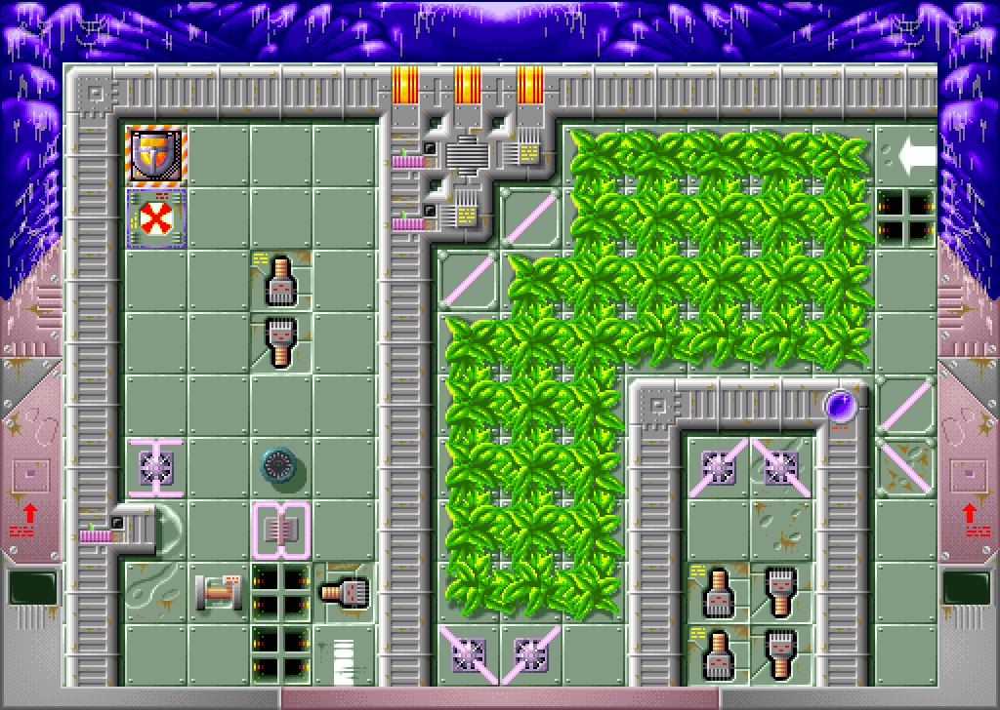
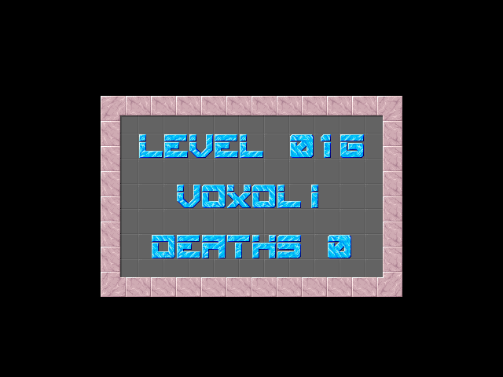
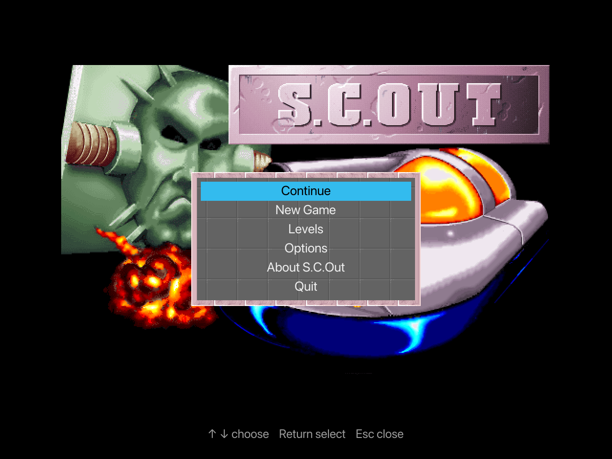
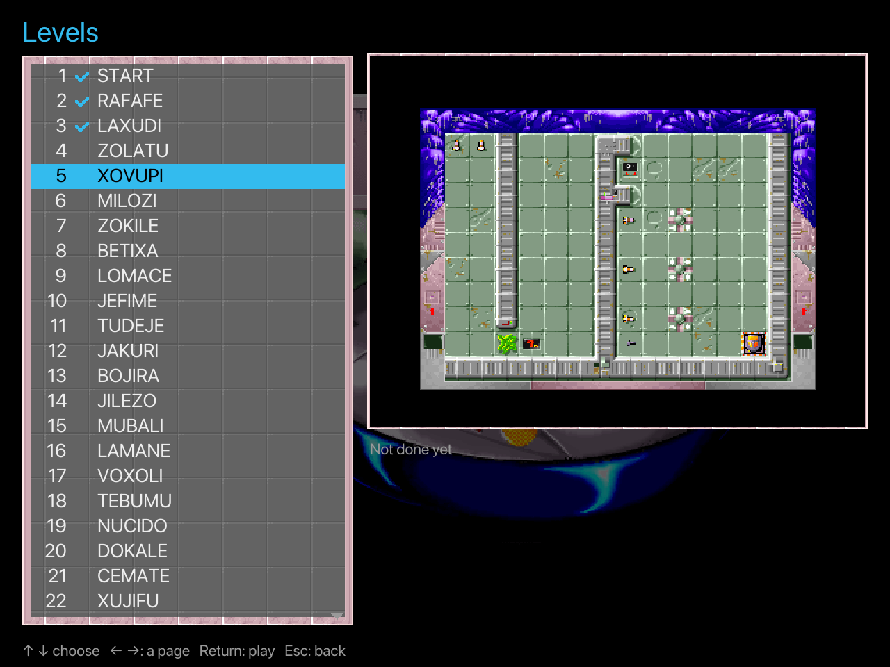
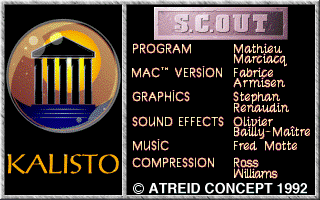

S.C.Out, the 1993 Mac game by Kalisto, rewritten to run on macOS, Windows and Linux. The same 101 levels, rules, sounds and music as the original - in a window or full screen, with sharp pixels.
You steer a small armoured scout through a hostile base, one screen of boxes at a time. Open doors with keys and switches, ride rails and teleporters, push your way past conveyors, dodge cannons and mines - and destroy the target that ends each level.
The puzzles get mean quickly. Checkpoints on the way, and a self destruct button for the moments you have locked yourself in.

This is not a remake. The levels, pictures and sounds come from the original Mac version, and the rules were taken from its program code and checked against it: the original's code runs in an emulator next to this version, and both have to do exactly the same, frame by frame.
- The game runs at 60 frames per second, like the original on a fast enough Mac.
- Fred Motte's music, played by a copy of the original's own music player - with a few bugs of that player fixed.
- Bugs of the original game are written down, and where fixing one would change how the game plays, it stays.
- New: dying costs nothing (the game counts your deaths instead of taking lives), any level from the level selection with your best times, Continue where you quit, and a rewind button (Backspace) that shows the last minutes as a timeline to play on from.
- Also new: keys you can change, full screen, pixels scaled by whole numbers or filling the window, and the game pauses when you switch to another window.



Install
With Homebrew on a Mac or on Linux, install the game and start it:
brew install metalsnake-classic-mac-ports/games/ouro-scout
ouro-scoutReady to play at once on Macs with Apple silicon and macOS 15 or 26, and on Linux on 64-bit Intel or AMD; elsewhere (Intel Macs, Linux on ARM) Homebrew builds the game first, which takes a few minutes. No Homebrew, or on Windows? Build it from source, below.
Build from source
For Windows, for Macs without Homebrew, and for working on the code. It takes a few minutes, and the game data is included. Pick your system:
macOS
With Homebrew
- Install Rust and SDL3:
brew install sdl3 - Get the source, and next to it the screens all Ouro ports share:
git clone https://github.com/metalsnake-classic-mac-ports/ouro-framework git clone https://github.com/metalsnake-classic-mac-ports/Ouro-S.C.Out cd Ouro-S.C.Out - Build and start the game:
cargo run --release -p scout
Without Homebrew
For Macs too old for Homebrew (macOS 11 or newer). Cargo builds SDL3 itself and puts it into the game; it needs CMake for that.
- Apple's command line tools (the compiler and git):
xcode-select --install - Rust, then open a new Terminal window:
curl --proto '=https' --tlsv1.2 -sSf https://sh.rustup.rs | sh - CMake: the macOS
.dmg; move CMake.app into Applications and make it known to the Terminal:export PATH="/Applications/CMake.app/Contents/bin:$PATH" - Get the source, and next to it the screens all Ouro ports share:
git clone https://github.com/metalsnake-classic-mac-ports/ouro-framework git clone https://github.com/metalsnake-classic-mac-ports/Ouro-S.C.Out cd Ouro-S.C.Out - Build and start the game:
The first build also compiles SDL and takes a few minutes longer. The game ends up incargo run --release -p scout --features sdl3/build-from-source-statictarget/release/ouro-scoutand needs nothing else installed.
Linux
Cargo builds SDL3 itself and puts it into the game; it needs a compiler, CMake and the development files of the graphics, sound and input libraries. Not tried on Linux yet (the Homebrew version above works there): if something fails, please tell us.
- The tools and libraries. Debian, Ubuntu:
Fedora:sudo apt install build-essential git cmake pkg-config \ libasound2-dev libpulse-dev libpipewire-0.3-dev libx11-dev libxext-dev \ libxrandr-dev libxcursor-dev libxfixes-dev libxi-dev libxss-dev libxtst-dev \ libxkbcommon-dev libwayland-dev libdecor-0-dev libdrm-dev libgbm-dev \ libgl1-mesa-dev libegl1-mesa-dev libdbus-1-dev libudev-devsudo dnf install gcc gcc-c++ git cmake alsa-lib-devel \ pulseaudio-libs-devel pipewire-devel libX11-devel libXext-devel libXrandr-devel \ libXcursor-devel libXfixes-devel libXi-devel libXScrnSaver-devel libXtst-devel \ libxkbcommon-devel wayland-devel wayland-protocols-devel libdecor-devel \ libdrm-devel mesa-libgbm-devel mesa-libGL-devel mesa-libEGL-devel dbus-devel \ systemd-devel - Rust, then open a new terminal:
curl --proto '=https' --tlsv1.2 -sSf https://sh.rustup.rs | sh - Get the source, and next to it the screens all Ouro ports share:
git clone https://github.com/metalsnake-classic-mac-ports/ouro-framework git clone https://github.com/metalsnake-classic-mac-ports/Ouro-S.C.Out cd Ouro-S.C.Out - Build and start the game:
The first build also compiles SDL and takes a few minutes longer. The game ends up incargo run --release -p scout --features sdl3/build-from-source-statictarget/release/ouro-scoutand needs nothing else installed.
Windows
There is no ready-made Windows version yet. Cargo builds SDL3 itself and puts it into the game. Not tried on Windows yet: if something fails, please tell us.
- Rust: download and run
rustup-init.exe; let it install the Visual Studio C++ build tools it asks for. - Git and CMake, in PowerShell; then open a new PowerShell window:
winget install Git.Git Kitware.CMake - Get the source, and next to it the screens all Ouro ports share:
git clone https://github.com/metalsnake-classic-mac-ports/ouro-framework git clone https://github.com/metalsnake-classic-mac-ports/Ouro-S.C.Out cd Ouro-S.C.Out - Build and start the game:
The first build also compiles SDL and takes a few minutes longer. The game ends up incargo run --release -p scout --features sdl3/build-from-source-statictarget\release\ouro-scout.exe.
| Arrow keys | Move |
|---|---|
| Return | Take, drop or swap an object; use a teleporter |
| Space | Fire a missile |
| Esc | Self destruct |
| Backspace | Rewind: the timeline of snapshots |
| Command P / Ctrl P | Pause and open the menu |
| Command Q / Ctrl Q | Quit |
| F11 | Full screen |
The game keys can be changed in Options → Keys.

S.C.Out © 1992 Atreid Concept, published by Kalisto:
- Program
- Mathieu Marciacq
- Mac version
- Fabrice Armisen
- Graphics
- Stephan Renaudin
- Sound effects
- Olivier Bailly-Maître
- Music
- Fred Motte
- Compression
- Ross Williams
Ouro S.C.Out by MetalSnake, 2026. Paul Mercat's 2008 port showed the way into the game. This project is not affiliated with the authors of the original.